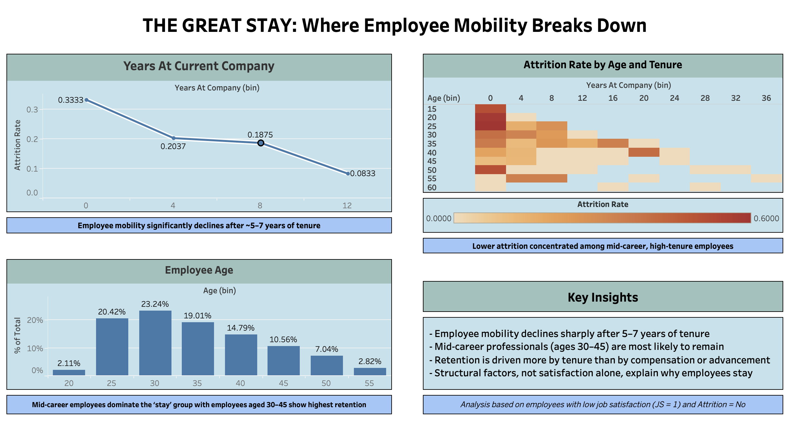

The Great Stay: Where Employee Mobility Breaks Down
Over the course of 21 days, I worked on a consulting-style project to analyze a trend called the "Great Stay".

Question asked:
Why are employees staying despite low job satisfaction
Key Insights:
Using employee attrition data, I explored how retention changes across tenure, age, and career progression, key insights include,
- Employee mobility drops significantly after their first year at a company.
- Mid-career professionals (30-45) are most likely to stay at their current company.
- Retention is driven more by structured factors than satisfaction alone.
Summary
The Great Stay: Where Employee Mobility Breaks Down dashboard was a 21-day project to test my consulting skills on a trend called “The Great Stay". This dashboard built on my previous one, which asked, “Why are employees leaving?” and reframed it to ask, “Why aren’t employees leaving?” After identifying that attrition is highest in early tenure and stabilises over time, I became interested in the opposite problem. From the dataset, it shows that mobility drops significantly after the first four years by roughly 33%, and this trend continues with each year. Next, employee age plays a role in employee retention as mid-career professionals tend to stay with the company due to ‘Mid-Career Stagnation’ or feeling 'stuck'. Lastly, retention was driven more by tenure and age, rather than by compensation or advancement. Therefore, I’m confident that structural factors play a bigger role in employees staying than satisfaction alone.
Business Impact
In a business perspective, this can,
- Reduce entry-level hiring opportunities.
- Slow internal career progression.
- Increase risk of organizational stagnation.
To address this, companies should:
- Track mobility alongside retention metrics.
- Create structural career progression programs
- Support mid-career transition internally.
Tools & Skills
- Data Visualization (Tableau)
- Data Analysis (Modeling, Descriptive Statistic)
- Data Cleaning (Excel)
- Microsoft Products (Excel, PowerPoint)
- Storytelling
- Problem Solving